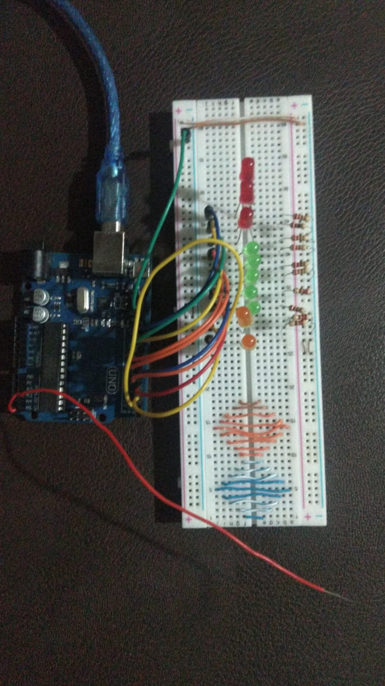

Es un conjunto de partículas, este tipo de ondas que viajan a grandes velocidades, se encuentran propagadas por el espacio constantemente. Estamos expuestos a ella en nuestra vida cotidiana. Entre las fuentes de radiación más conocidas, se encuentra el sol. Gran parte de esta radiación no afecta o supone riesgo a la salud humana, pero como regla general, la radiación conlleva menores riesgos con dosis bajas y mayores riesgos con dosis más elevadas.
Sin embargo, hoy es muy difícil imaginar nuestra vida sin todos los equipos tecnológicos que nos rodean día a día, dispositivos en gran medida para facilitar nuestra rutina diaria, de la cual nadie especula o se pregunta. Pero existe una excesiva presencia de radiación electromagnética que puede afectar el ambiente y causar el deterioro en la salud de los seres vivos. ¿Qué hay de malo en usar dicha tecnología?.
La dependencia del ser humano, por ejemplo, con el celular, es reciente, no hace años la dependencia a estos objetos existía, por lo que los efectos a largo plazo aún no han marcado, en la ciencia actual, un alarmismo agresivo del riesgo del contacto con este dispositivo.
A pesar de todo lo dicho, la ciencia se ha dado a la tarea de estudiar los efectos a los que conllevan el uso de la tecnología actual, de lo que implica vivir bajo las ondas electromagnéticas, demostrándonos los efectos reales de la nueva “Contaminación Electromagnética”.
Como medirla?
Para detectar dichas radiaciones se usan dispositivos que perciben las ondas electromagnéticas. Existen diferentes modelos usados en campos como la medicina, o la astronomía.
Para esta investigación, se usarán unos sensores encargados de vigilar y comprobar las emisiones electromagnéticas que son emitidas por los aparatos tecnológicos del día a día. .
 Sensor de campos electromagnéticos que se realizo para el proyecto.La investigación explorará los diferentes sensores adecuados según el tipo de contaminación electromagnética que deseemos medir. Se usarán los sensores para entornos de salud, evaluación de medio ambiente, control de niveles de raciones y como no, en entornos educativos e industriales, al comprender y monitorear con precisión la contaminación electromagnética, podremos tomar medidas proactivas, para mitigar esos efectos negativos o adversos, garantizando un futuro más seguro y saludable para todos.